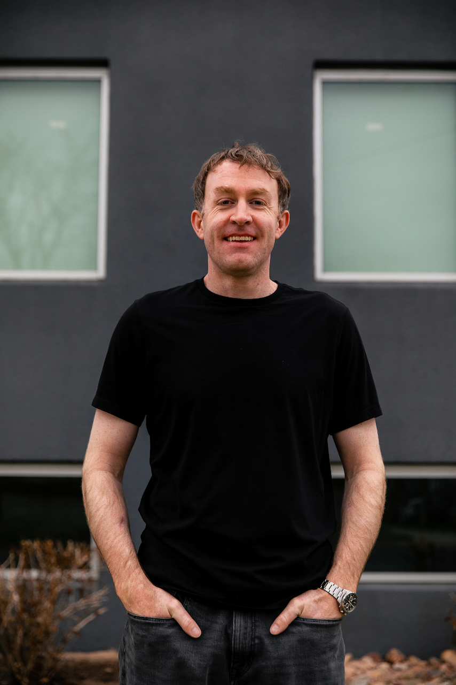

Skills:
- Javascript
- HTML
- CSS
Projects:
- Personal Website
- Cancer Detection Platform
Experience:
- Datadog
- Weigel Broadcasting
Education:
- Flatiron School
- DePaul University
- Tulane Univeristy
About:
Hi there! I'm a beginner web developer with a passion for technology and electronics. I was born and raised in Chicago, and from a young age, I was always tinkering with computers and electronics. After graduating from college, I attended film school where I gravitated towards the technical side of the industry; specializing in cinematography and video editing.
After film school, I spent 14 years honing my skills in visual storytelling and project management, working on a variety of film and TV productions. While I enjoyed my work in the industry, I always felt drawn to the world of software and technology.
That's when I had the chance to work as a video producer for Datadog, a technology company based in New York City that specializes in cloud-based monitoring and analytics. Working alongside Datadog's talented team, I was inspired by their passion for technology and their commitment to developing innovative solutions to complex problems.
As I continued to learn more about Datadog's technology and the power of web development, I became increasingly convinced that this was the path I wanted to pursue. My previous experience in film and TV production has given me a strong foundation in project management, problem-solving, and creativity, all of which are critical skills in the world of web development.
I'm excited to continue learning and growing as a web developer, building on my skills in HTML, CSS, and JavaScript. I'm also exploring new technologies like React and Node.js to expand my skill set and create innovative solutions that will make a real difference in people's lives.
